← Índice de los 69 tutes de IDA
Tute 44 · WinDbg dentro de IDA (heap)
se conecta con: Vulnerabilidades (defensivo)
INTRODUCCIÓN AL REVERSING CON IDA PRO DESDE CERO PARTE 44.
MAS WINDBG DENTRO DE IDA VIENDO HEAP.
Por supuesto tenemos el ejercicio para resolver PRACTICA_44, pero lo haremos en la partes siguientes ahora veremos alguna info mas que podemos obtener usando Windbg dentro de IDA. Usaremos el caso anterior del PRACTICA 41 b que como sabemos era un heap overflow.
Cambiamos el debugger de IDA a Windbg y nos fijamos que en las DEBUGGER OPTIONS este en modo USER.
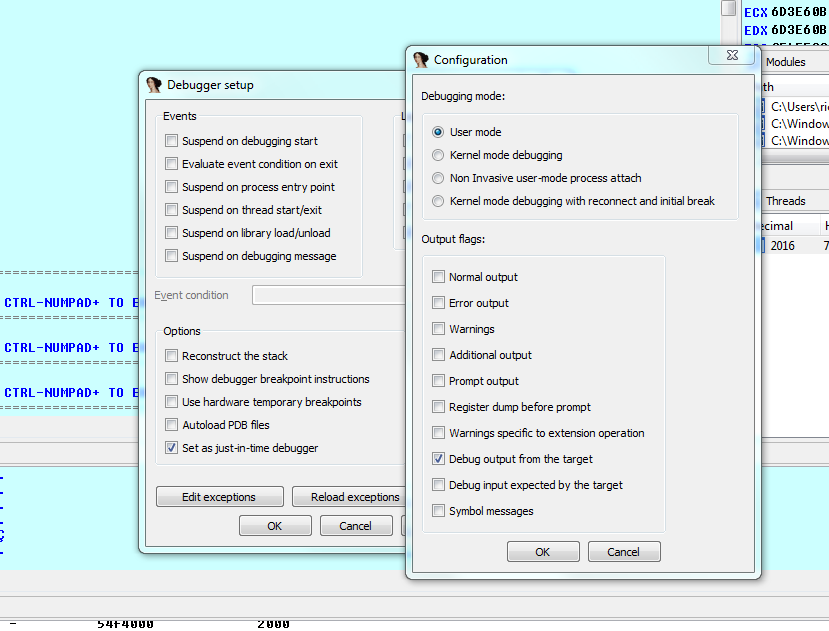
Cambiamos el gflags para que el proceso tenga el PAGE HEAP enabled en modo full.
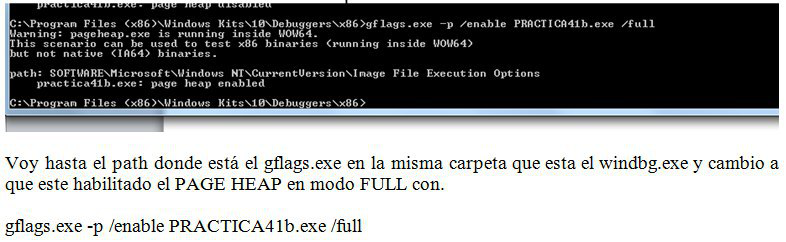
Y lanzo el script2
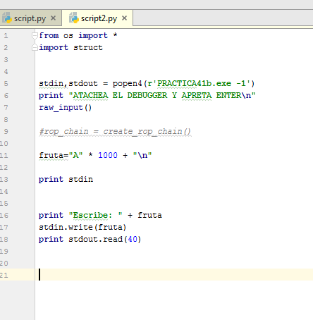
Pero esta vez cuando se detiene atacheo el IDA con al análisis del PRACTICA41b cargado en el LOADER y por supuesto en modo debugger Windbg user.
Lógicamente crasheara al igual que antes, cuando intenta escribir fuera del bloque allocado y desborda.
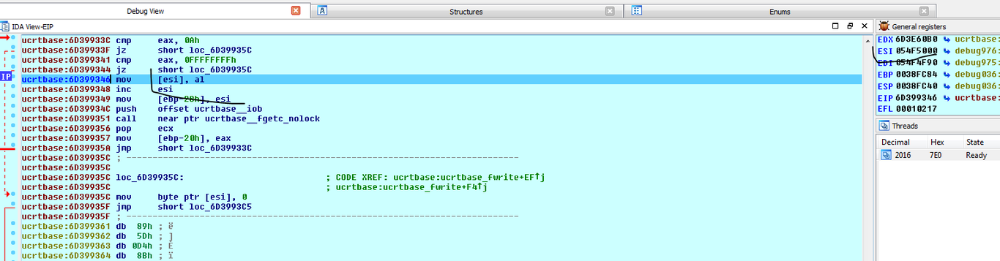
Por supuesto para esto tienen que tener bien configurado el Windbg dentro de IDA de cualquier manera si alguien tuvo problemas para instalar el Windbg y que ida se lo reconozca, lo pude hacer atacheando el WINDBG fuera de IDA y tipeando los comandos en el mismo, no tendrán la interfase del IDA pero les dará la misma información.
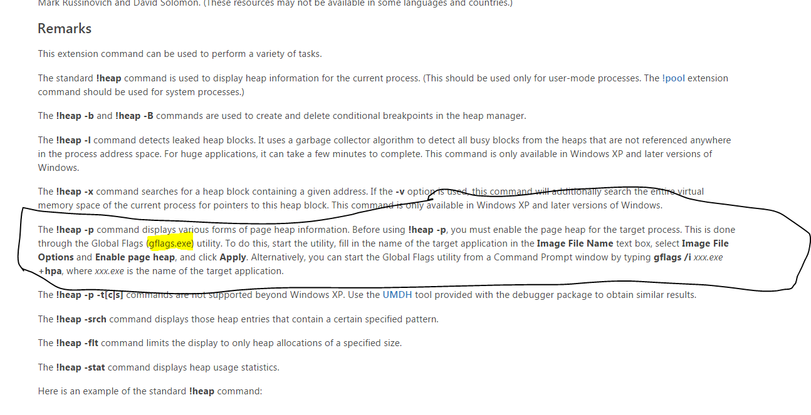
Bueno tiene muchos comandos de heap útiles el Windbg, creo que para trabajar con heaps es el más completo.
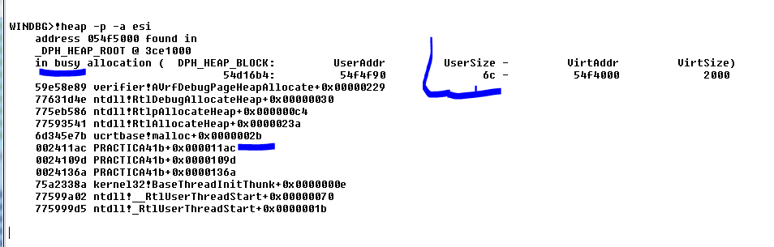
Ese comando es muy útil solo funciona por completo con las page heap full enabled, y vemos que me dice el size del bloque allocado, que el mismo esta usado o busy (no libre) y me informa la historia de los lugares por donde paso cuando ese bloque se allocó.
Si hubiéramos lanzado el mismo comando en un bloque que fue liberado o free, nos daría la historia de los lugares donde se liberó.
Vemos que la allocacion proviene de
002411ac PRACTICA41b+0x000011ac
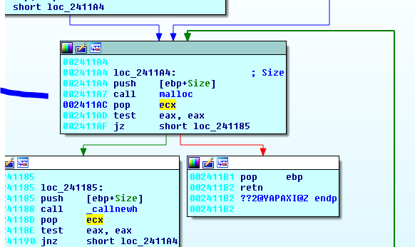
Y hacia arriba en la lista de la historia, se ve como llama a malloc luego internamente a RtlAllocateHeap etc.
Hacia abajo en la lista de la historia tenemos
0024109d PRACTICA41b+0x0000109d
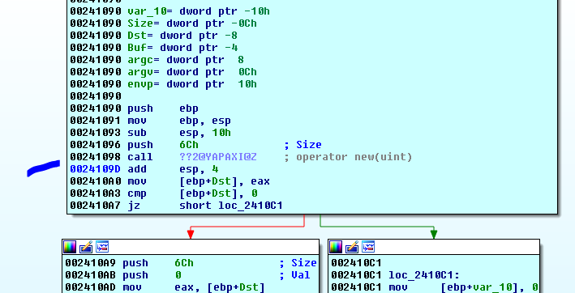
Vemos que nos marca los return address de los calls donde entro al allocar.
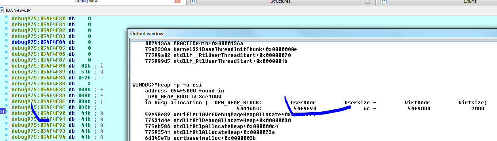
Vemos que nos muestra el user address que es el inicio del bloque para el usuario, donde se puede escribir, antes está el header del bloque.
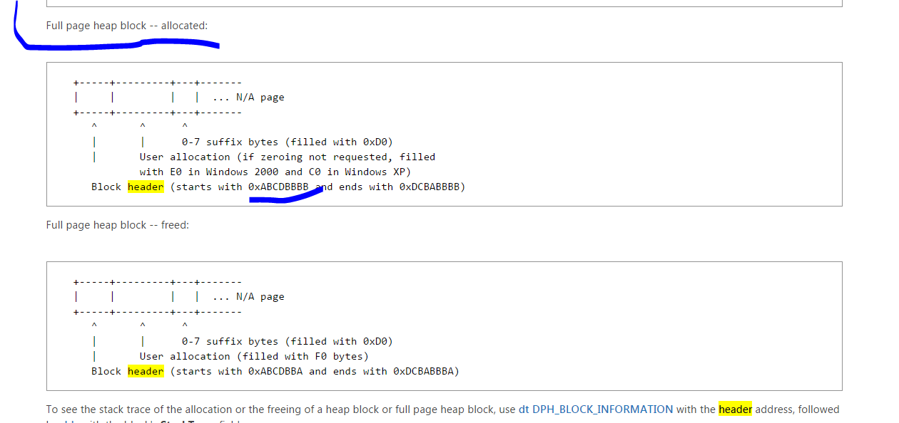
En la página de Microsoft vemos la información del header en este caso para heap en modo full page, vemos que comienza con ABCDBBBB y termina con DCABBBBB, veamos si lo vemos justo antes del inicio de donde escribimos.
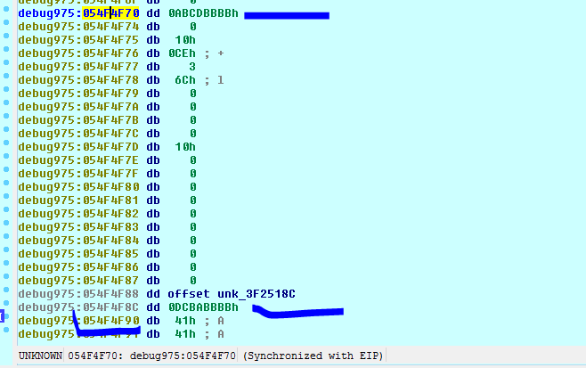
Con el comando dt del Windbg seguido de _DPH_BLOCK_INFORMATION nos dará la información de los campos del header.
Si vamos a la dirección que apunta el stack trace
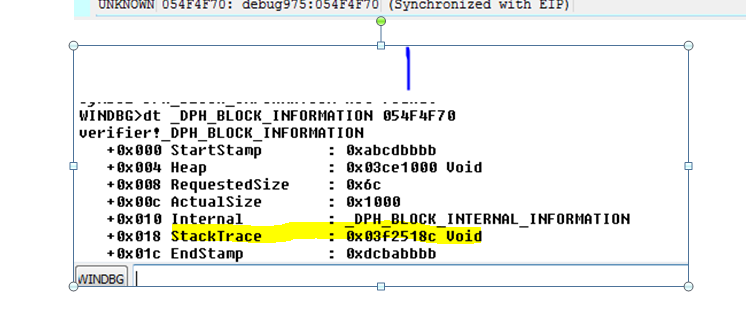
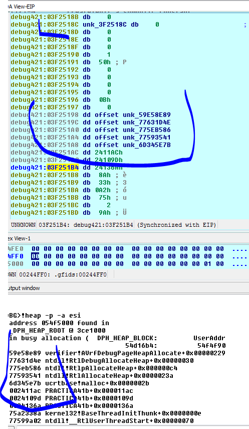
Vemos que un poco más abajo, guarda la historia de la allocacion, coincide con los que nos dio el comando
HISTORIA DE LA ALLOCACION.
¡heap –p –a xxx
Ahora probaremos que info nos da en el caso de usarlo con heap normal, obviamente no será tan específica ni tendrá historia de cada bloque, pero bueno.
Deshabilito el page guard full.
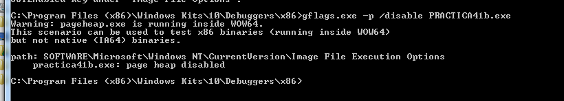
Lanzo el script de nuevo y cuando para atacheo de nuevo el ida con el análisis y el debugger Windbg local como antes.
Lógicamente no tenemos la misma info y el programa crasheo cuando salta a ejecutar miremos el heap a ver que vemos.
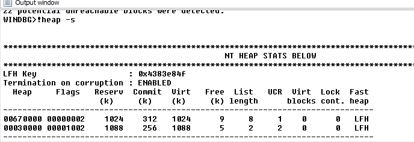
Las estadísticas del heap
Si vamos a la zona donde salto mirando el stack, sabemos que viene de allí.
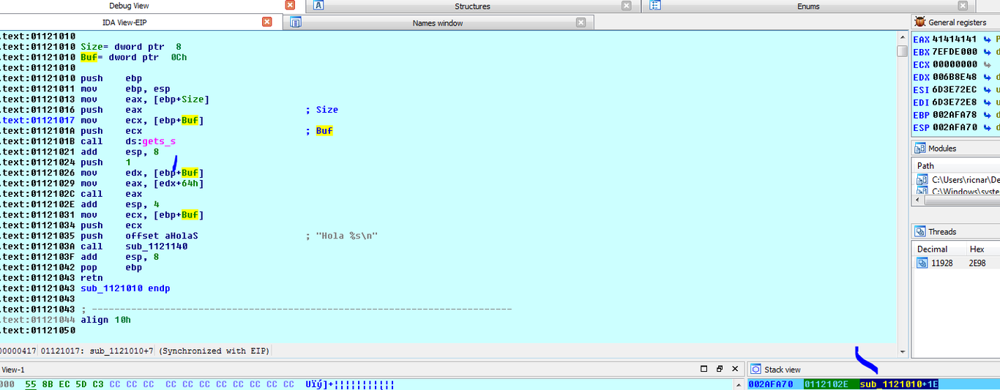
Y vemos que EBP no cambio y como conocemos el programa haremos trampita mirando el valor del buffer que le pasamos a gets_s que es el inicio del bloque allocado pues copia allí, se le pasa como argumento (obviamente esto lo podemos hacer porque es un programita sencillo y para aprender, sino hay que habilitar el page guard y hacer lo que vimos antes)
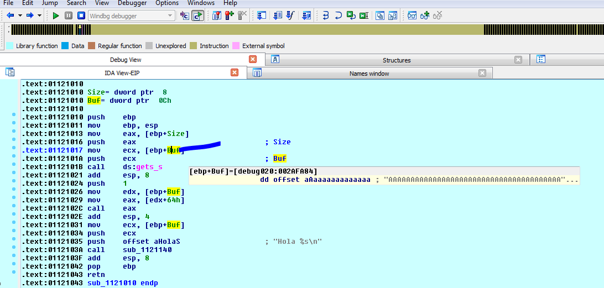
La variable Buf sigue apuntando al inicio del bloque del heap, asi que podemos ir allí.
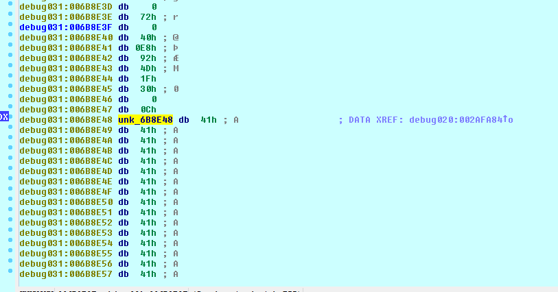
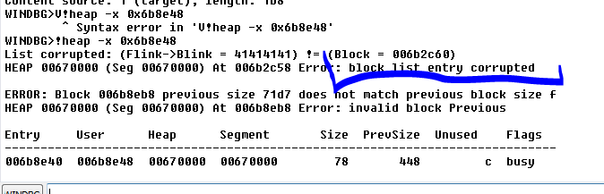
Esta corrupta eso sabemos.
Obviamente como esta todo roto, trataremos de atachearlo antes de que se rompa el heap para ver la info de un bloque bueno, no puedo arrancarlo directo en IDA porque eso lo arranca en modo debug al heap, así que le pondré un EB FE en el inicio para que quede loopeando y cuando lo arranque lo atacheare.
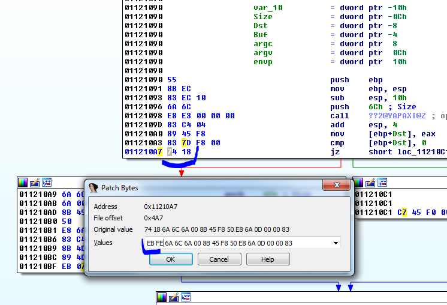
Le cambiare el 74 18 del salto condicional por un EB FE, una vez cambiados EDIT-PATCH PROGRAM- APPLY PATCH TO INPUT FILE.
Ahora arranco el script una vez que queda loopeando paro ahí, pero como ya paso por el malloc ya puedo mirar el heap.
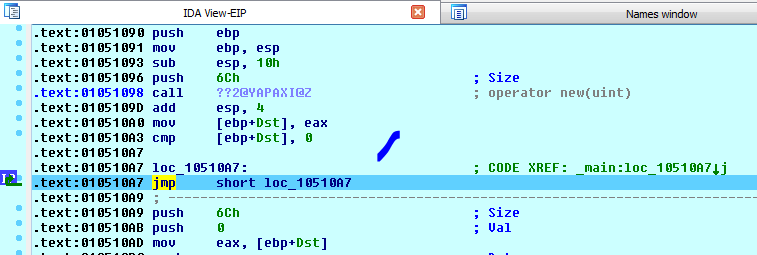
Después de allocar EAX queda con la dirección del bloque.
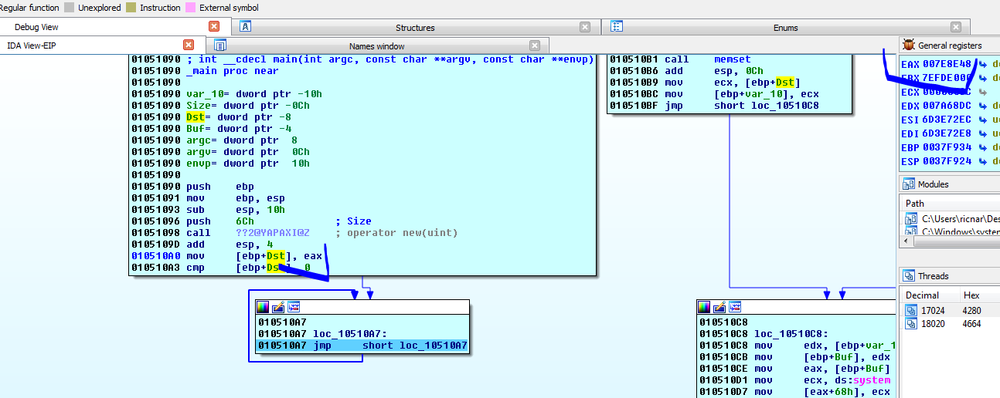
Veamos que dice.
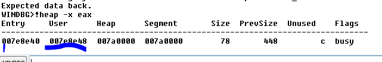
User como siempre es la parte donde se puede escribir, y Entry es donde comienza el header, veamos.
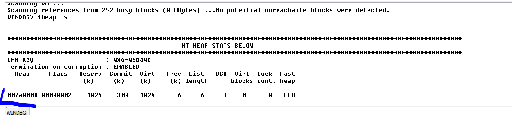
Nos muestra un solo heap y allí esta veamos su contenido.
WINDBG>!heap -a 007a0000
Index Address Name Debugging options enabled
1: 007a0000
Segment at 007a0000 to 008a0000 (0004b000 bytes committed)
Flags: 00000002
ForceFlags: 00000000
Granularity: 8 bytes
Segment Reserve: 00100000
Segment Commit: 00002000
DeCommit Block Thres: 00000800
DeCommit Total Thres: 00002000
Total Free Size: 0000031b
Max. Allocation Size: 7ffdefff
Lock Variable at: 007a0138
Next TagIndex: 0000
Maximum TagIndex: 0000
Tag Entries: 00000000
PsuedoTag Entries: 00000000
Virtual Alloc List: 007a00a0
Uncommitted ranges: 007a0090
007eb000: 000b5000 (741376 bytes)
FreeList[ 00 ] at 007a00c4: 007e8ec0 . 007e4e90
007e4e88: 00028 . 00010 [100] - free 007a6750: 00028 . 00010 [100] - free 007a6158: 00050 . 00010 [100] - free 007e2d30: 00028 . 00018 [100] - free 007e2c58: 00210 . 00018 [100] - free 007e8eb8: 00078 . 01878 [100] - free
Segment00 at 007a0000:
Flags: 00000000
Base: 007a0000
First Entry: 007a0588
Last Entry: 008a0000
Total Pages: 00000100
Total UnCommit: 000000b5
Largest UnCommit:00000000
UnCommitted Ranges: (1)
Heap entries for Segment00 in Heap 007a0000
address: psize . size flags state (requested size)
007a0000: 00000 . 00588 [101] - busy (587) 007a0588: 00588 . 00240 [101] - busy (23f) 007a07c8: 00240 . 00020 [101] - busy (18) 007a07e8: 00020 . 01dd8 [101] - busy (1dce) 007a25c0: 01dd8 . 02d00 [101] - busy (2cf8) 007a52c0: 02d00 . 00048 [101] - busy (3c) 007a5308: 00048 . 00038 [101] - busy (30) 007a5340: 00038 . 00080 [101] - busy (78) 007a53c0: 00080 . 00080 [101] - busy (78) 007a5440: 00080 . 00048 [101] - busy (3c) 007a5488: 00048 . 00228 [101] - busy (220) 007a56b0: 00228 . 00050 [101] - busy (42) 007a5700: 00050 . 00080 [101] - busy (78) 007a5780: 00080 . 00018 [101] - busy (10) 007a5798: 00018 . 00050 [101] - busy (46) 007a57e8: 00050 . 00080 [101] - busy (78) 007a5868: 00080 . 00018 [101] - busy (10) 007a5880: 00018 . 00018 [101] - busy (10) 007a5898: 00018 . 00020 [101] - busy (14) 007a58b8: 00020 . 00070 [101] - busy (64) 007a5928: 00070 . 00208 [101] - busy (200) 007a5b30: 00208 . 00208 [101] - busy (200) 007a5d38: 00208 . 00030 [101] - busy (24) 007a5d68: 00030 . 00030 [101] - busy (24) 007a5d98: 00030 . 00038 [101] - busy (30) 007a5dd0: 00038 . 00028 [101] - busy (20) 007a5df8: 00028 . 00028 [101] - busy (20) 007a5e20: 00028 . 00028 [101] - busy (20) 007a5e48: 00028 . 00028 [101] - busy (20) 007a5e70: 00028 . 00018 [101] - busy (10) 007a5e88: 00018 . 00080 [101] - busy (78) 007a5f08: 00080 . 00080 [101] - busy (78) 007a5f88: 00080 . 00018 [101] - busy (10) 007a5fa0: 00018 . 00020 [101] - busy (14) 007a5fc0: 00020 . 00020 [101] - busy (10) 007a5fe0: 00020 . 00078 [101] - busy (6c) 007a6058: 00078 . 00080 [101] - busy (78) 007a60d8: 00080 . 00018 [101] - busy (10) 007a60f0: 00018 . 00018 [101] - busy (10) 007a6108: 00018 . 00050 [101] - busy (42) 007a6158: 00050 . 00010 [100] 007a6168: 00010 . 00058 [101] - busy (4a) 007a61c0: 00058 . 00080 [101] - busy (78) 007a6240: 00080 . 00020 [101] - busy (10) 007a6260: 00020 . 00018 [101] - busy (10) 007a6278: 00018 . 00080 [101] - busy (78) 007a62f8: 00080 . 00020 [101] - busy (10) 007a6318: 00020 . 00018 [101] - busy (10) 007a6330: 00018 . 00018 [101] - busy (10) 007a6348: 00018 . 00070 [101] - busy (68) 007a63b8: 00070 . 00080 [101] - busy (78) 007a6438: 00080 . 00018 [101] - busy (10) 007a6450: 00018 . 00070 [101] - busy (68) 007a64c0: 00070 . 00078 [101] - busy (70) 007a6538: 00078 . 00080 [101] - busy (78) 007a65b8: 00080 . 00020 [101] - busy (10) 007a65d8: 00020 . 00018 [101] - busy (10) 007a65f0: 00018 . 00020 [101] - busy (10) 007a6610: 00020 . 00078 [101] - busy (6a) 007a6688: 00078 . 00088 [101] - busy (7c) 007a6710: 00088 . 00018 [101] - busy (10) 007a6728: 00018 . 00028 [101] - busy (20) 007a6750: 00028 . 00010 [100] 007a6760: 00010 . 00080 [101] - busy (78) 007a67e0: 00080 . 00080 [101] - busy (78) 007a6860: 00080 . 03d20 [101] - busy (3d1f) 007aa580: 03d20 . 378b0 [101] - busy (378a8) Internal 007e1e30: 378b0 . 00080 [101] - busy (78) 007e1eb0: 00080 . 00020 [101] - busy (17) 007e1ed0: 00020 . 00400 [101] - busy (3f8) Internal 007e22d0: 00400 . 00400 [101] - busy (3f8) Internal 007e26d0: 00400 . 00080 [101] - busy (78) 007e2750: 00080 . 00080 [101] - busy (78) 007e27d0: 00080 . 00028 [101] - busy (20) 007e27f8: 00028 . 00028 [101] - busy (20) 007e2820: 00028 . 00070 [101] - busy (66) 007e2890: 00070 . 00080 [101] - busy (78) 007e2910: 00080 . 00028 [101] - busy (20) 007e2938: 00028 . 00028 [101] - busy (20) 007e2960: 00028 . 00070 [101] - busy (68) 007e29d0: 00070 . 00078 [101] - busy (6a) 007e2a48: 00078 . 00210 [101] - busy (208) 007e2c58: 00210 . 00018 [100] 007e2c70: 00018 . 00070 [101] - busy (66) 007e2ce0: 00070 . 00028 [101] - busy (20) 007e2d08: 00028 . 00028 [101] - busy (20) 007e2d30: 00028 . 00018 [100] 007e2d48: 00018 . 00078 [101] - busy (6c) 007e2dc0: 00078 . 02000 [101] - busy (1ff8) Internal 007e4dc0: 02000 . 00028 [101] - busy (20) 007e4de8: 00028 . 00028 [101] - busy (20) 007e4e10: 00028 . 00028 [101] - busy (20) 007e4e38: 00028 . 00028 [101] - busy (20) 007e4e60: 00028 . 00028 [101] - busy (20) 007e4e88: 00028 . 00010 [100] 007e4e98: 00010 . 00078 [101] - busy (6a) 007e4f10: 00078 . 00408 [101] - busy (400) 007e5318: 00408 . 00028 [101] - busy (20) 007e5340: 00028 . 00800 [101] - busy (7f8) Internal 007e5b40: 00800 . 006d0 [101] - busy (6c8) 007e6210: 006d0 . 00c08 [101] - busy (c00) 007e6e18: 00c08 . 00800 [101] - busy (7f8) Internal 007e7618: 00800 . 00228 [101] - busy (220) 007e7840: 00228 . 00228 [101] - busy (220) 007e7a68: 00228 . 00490 [101] - busy (483) 007e7ef8: 00490 . 00218 [101] - busy (209) 007e8110: 00218 . 00058 [101] - busy (4a) 007e8168: 00058 . 00808 [101] - busy (800) 007e8970: 00808 . 00088 [101] - busy (80) 007e89f8: 00088 . 00448 [101] - busy (440) 007e8e40: 00448 . 00078 [101] - busy (6c) 007e8eb8: 00078 . 01878 [100] 007ea730: 01878 . 00100 [101] - busy (f4) 007ea830: 00100 . 00038 [101] - busy (2e) 007ea868: 00038 . 00030 [101] - busy (28) 007ea898: 00030 . 00040 [101] - busy (37) 007ea8d8: 00040 . 00048 [101] - busy (3c) 007ea920: 00048 . 00040 [101] - busy (31) 007ea960: 00040 . 00030 [101] - busy (24) 007ea990: 00030 . 00040 [101] - busy (32) 007ea9d0: 00040 . 00038 [101] - busy (2e) 007eaa08: 00038 . 00038 [101] - busy (2c) 007eaa40: 00038 . 00030 [101] - busy (28) 007eaa70: 00030 . 00030 [101] - busy (21) 007eaaa0: 00030 . 00020 [101] - busy (15) 007eaac0: 00020 . 00038 [101] - busy (2b) 007eaaf8: 00038 . 00030 [101] - busy (22) 007eab28: 00030 . 00038 [101] - busy (2e) 007eab60: 00038 . 00048 [101] - busy (39) 007eaba8: 00048 . 00020 [101] - busy (17) 007eabc8: 00020 . 00040 [101] - busy (36) 007eac08: 00040 . 00050 [101] - busy (47) 007eac58: 00050 . 00050 [101] - busy (48) 007eaca8: 00050 . 00020 [101] - busy (12) 007eacc8: 00020 . 00020 [101] - busy (18) 007eace8: 00020 . 00030 [101] - busy (24) 007ead18: 00030 . 00038 [101] - busy (29) 007ead50: 00038 . 00098 [101] - busy (8b) 007eade8: 00098 . 00020 [101] - busy (17) 007eae08: 00020 . 00020 [101] - busy (11) 007eae28: 00020 . 00020 [101] - busy (18) 007eae48: 00020 . 00020 [101] - busy (17) 007eae68: 00020 . 00030 [101] - busy (21) 007eae98: 00030 . 00020 [101] - busy (13) 007eaeb8: 00020 . 00020 [101] - busy (14) 007eaed8: 00020 . 00020 [101] - busy (16) 007eaef8: 00020 . 00030 [101] - busy (28) 007eaf28: 00030 . 00030 [101] - busy (27) 007eaf58: 00030 . 00060 [101] - busy (52) 007eafb8: 00060 . 00028 [101] - busy (12) 007eafe0: 00028 . 00020 [111] - busy (1d) 007eb000: 000b5000 - uncommitted bytes.
Si vemos en la lista, está el bloque si lo buscamos por la dirección del header y nos dice el size
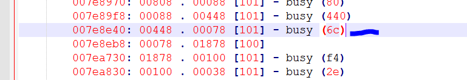
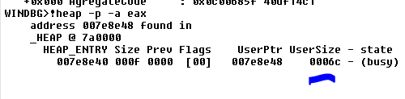
Vemos que ya no nos muestra la historia aunque si el size, el size general es 0xf porque para hallar el total se multiplica por 8 lo que da
hex(0xf *0x8)
'0x78'
Que es el size completo con el header y la finalización etc.
En el caso del heap normal para ver los valores hay que usar
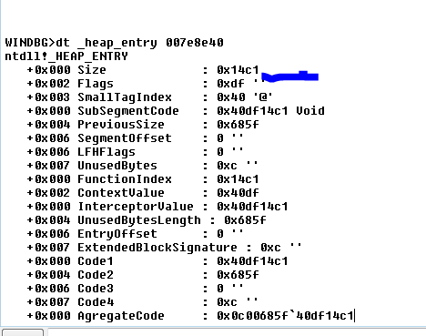
El tema es que están encodeados (xoreados) con una constante, donde podemos hallar la constante para desexorearlos.
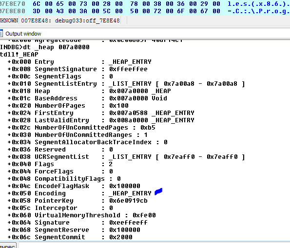
Vemos que el offset 0x50 de la estructura del heap se llama encoding
WINDBG>dd 007a0000+ 0x50 L2
007a0050 4ede14ce 000068d6
Son esos DWORDS los que xorearon la info.
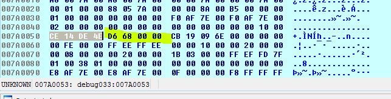
Si hacemos lo mismo en el header dividiéndolo en dos DWORDS
dd 007E8E40 L2
Tengo los dos dwords que debo xorear con los dos de la entrada.
WINDBG>dd 007a0000+ 0x50 L2
007a0050 4ede14ce 000068d6
WINDBG>dd 007E8E40 L2
007e8e40 40df14c1 0c00685f
Xoreo
WINDBG>? 4ede14ce ^ 40df14c1
Evaluate expression: 234946575 = 0e01000f
WINDBG>? 68d6 ^ 0c00685f
Evaluate expression: 201326729 = 0c000089
Podemos armar la tablita, obviamente romperemos el programa y no podrá correr más pero para ver.
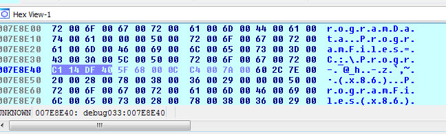
Remplazo los valores por los xoreados.
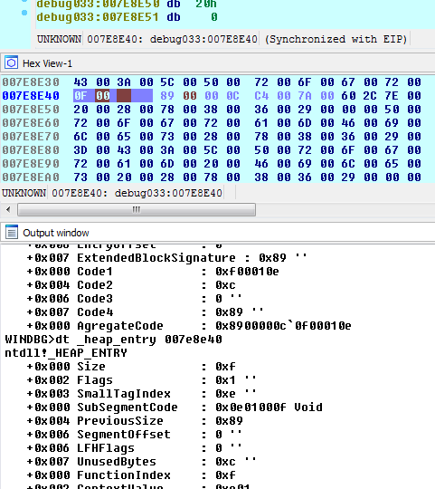
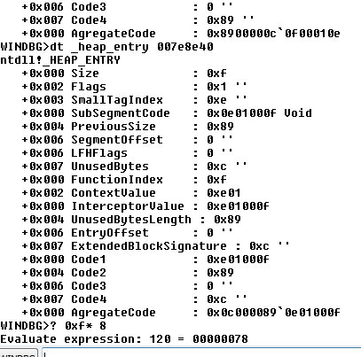
Como en este caso el size es 0xf, hay que multiplicarlo por ocho para hallar el size total y me da 0x78 que es el mismo que me daba al inicio lo que incluye el header y la finalización.
Bueno vamos poco a poco mirando y familiarizándonos con los bloques del heap, la próxima veremos que nos tiene que decir mona sobre esto, si ayuda o no jeje.
Hasta la parte 45
Ricardo Narvaja